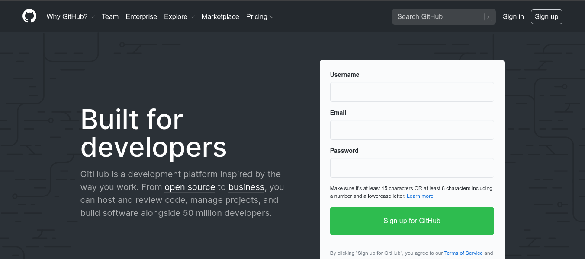
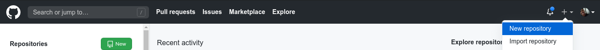
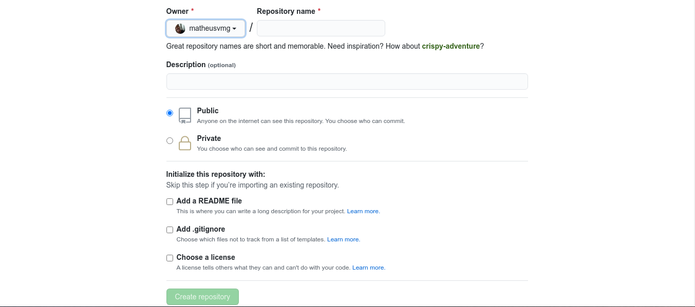

Muita gente, mas muita gente mesmo, se pega confundindo os termos GIT e GITHUB, mas fique tranquilos que vamos explicar esses conceitos de uma vez por todas, tenho certeza que após você ler esse artigo conseguirá distinguir as duas ferramentas e utilizá-las da melhor forma possível.
O GIT é um sistema de controle de versão de código desenvolvido tanto para lidar com projetos pequenos, quanto projetos maiores, mas para você realmente entender o que é o GIT vamos ao nosso exemplo: imagine que você faz parte de um time de desenvolvimento, cuja função é desenvolver um sistema de gerenciamento. Em uma equipe de desenvolvimento temos diversos tipos de profissionais que desempenham funções distintas, quando estamos trabalhando com código cada programador realiza modificações em certas partes do código fonte do sistema, logo como fazemos para juntar cada modificação que cada desenvolvedor realizou no código? Como modificamos uma parte do sistema sem alterar a versão em produção? Pegamos um pen drive e colocamos o código e passamos para o colega do lado? NÃO... é aqui que chegamos ao conceito de versionamento de código, essa ferramenta permite que o desenvolvimento seja como uma linha no tempo, onde temos linhas do tempo (branch) e diversos pontos na história ( modificações, commits ) , sendo a linha do tempo principal (master) o projeto na versão final e as outras linhas do tempo paralelas são modificações que os desenvolvedores do time realizaram. O GIT ajuda você a ter mais controle do projeto, permite que visualize modificações específicas em um determinado ponto na história, permite que você volte em um ponto específico e entre outras funcionalidades, agregando não somente para o desenvolvimento, mas também para o time.
Como esse é um artigo que tem o objetivo de levar você a entender o GIT e GITHUB, vamos ao uma abordagem mais prática.
Para que o GIT consiga monitorar as alterações do nosso projeto precisamos primeiramente inicializar um repositório GIT no local do nosso projeto. OBS: “repositório” é um diretório qualquer, ou seja uma pasta onde o GIT mantém todos os arquivos necessários para o controle de versão.
Para inicializar um repositório local com o GIT:
Na ferramenta GIT existe um comando que permite que ele verifique, em todo o seu projeto, se existe alguma modificação ou se algum novo arquivo foi adicionado ou deletado. É muito importante pois você consegue visualmente ter o controle do projeto. Para realizar esse procedimento utilize o comando “git status” no terminal. Onde a ferramenta te mostra na branch onde você se encontra e quais são os arquivos a receber o commit (modificados, adicionados ao staged).
Essa é uma das principais etapas, pois através dela que o GIT vai conseguir observar sempre que um arquivo ou funcionalidade é modificada no nosso projeto, dizendo para nós quais arquivos e onde eles foram modificados. O GIT só consegue observar as modificações depois que elas são adicionadas a um estado chamado de staged, basicamente o git registra o estado atual de todo o conteúdo do projeto e verifica se existem modificações baseado no último commit, se existe modificações nós precisamos adicioná-las ao staged, uma área que prepara todas essas modificações para o commit, com o comando git add nome-do-arquivo adicionando um arquivo específico ou git add .. Para adicionar todas as modificações de uma só vez, o GIT assim que esses arquivos são adicionados registra o novo estado e consegue verificar se existe modificações ou não no projeto.
O próximo passo depois de ter adicionado os arquivos criados ou modificados ao staged é fazer o commit. Imagine o commit como se fosse uma caixa, onde o GIT guarda todas aquelas alterações que foram feitas e lacra essa caixa e adiciona como um ponto na história, já que estamos falando de linha do tempo, o ponto interessante é que o GIT te permite navegar entre esses pontos (commits) na sua linha do tempo (branches), o GIT te dá o super poder de voltar no tempo, e esse é o ponto central do sistema de versionamento. Fez alguma alteração, entretanto precisa voltar a versão anterior? O GIT permite que faça isso, pois temos a capacidade de adicionar pontos na história (commits). Para realizar os commits das modificações basta utilizar o comando git commit -m “mensagem explicando o commit” no terminal. OBS: a flag -m do lado da palavra commit significa mensagem, é a mensagem que você vai passar explicando e detalhando aquele commit.
Como foi dito anteriormente o GIT funciona como se fosse um linha do tempo, onde a principal é a master. OBS: quando falamos de linha do tempo estamos falando de branches ou ramos. O GIT permite criar quantas linhas do tempo forem necessárias, então vamos partir para mais um exemplo para você entender melhor. Lembra do exemplo acima, do time de desenvolvimento? Então, como foi dito cada programador trabalha em uma parte específica do código fonte, quando um desenvolvedor tem que realizar um teste ou uma implementação de uma funcionalidade ele cria um branch, ou como estamos falando neste artigo uma linha do tempo paralela, onde essa linha do tempo herda todas as características da linha do tempo principal e a partir dela podem ser feitas modificações que só irão ter efeitos naquela linha do tempo (branch). O principal benefício é que você consegue modificar, deletar e inserir sem alterar a versão atual em produção (linha do tempo principal) e também sem ter qualquer contato com as modificações que seus colegas de time estão fazendo naquele momento. O comando para essa funcionalidade é o git branch nome-da-branch para criar uma nova branch e caso você queira criar uma nova branch e já se redirecionar para ela o comando é git checkout -b nome-da-branch, caso queira saber em qual branch você se encontra basta digitar o comando git branch que o git lista as branches disponíveis e mostra em destaque a que você se localiza. Vale ressaltar que, também temos o comando git switch nome-da-branch para ir de uma branch para outra, o GIT permite que você realize a função de diversas formas, todavia para facilitar a compreensão vamos nos ater aos principais comandos.
Um das funcionalidades mais interessantes do GIT é a possibilidade de juntar a linha do tempo paralela com a principal, ou seja, todas aquelas alterações que o desenvolvedor fez na branch de desenvolvimento, agora podem ser mescladas com o ramo principal. A tarefa é relativamente simples, basta você ir para a branch na qual quer que as alterações sejam mescladas e realizar o merge das alterações da outra branch. O comando próprio para essa tarefa é o git merge nome-da-branch.
O GITHUB é uma plataforma que serve para a hospedagem de código-fonte, compartilhamento de informações, gerenciamento de projetos e usa o sistema de controle de versão GIT. Ele permite que desenvolvedores ao redor do mundo consigam contribuir tanto para projetos open-source, quanto para projetos privados.
Para eu utilizar tenho que ser desenvolvedor? NÃO...qualquer pessoa do mundo pode criar uma conta gratuita e utilizar a ferramenta. É tão simples como qualquer outro cadastro, basta entrar nesse site: GITHUB e nos campos de cadastro digitar o nome de usuário, email e senha. Logo após confirme o email e pronto! Já pode fazer login e usar tudo o que o github pode oferecer.
Ponto 2 e 3
Ponto 4 em diante
Aqui estamos na etapa final. Quando o time de desenvolvimento já fez todas as alterações no projeto, validaram e juntaram todas as modificações, e agora falta enviar o projeto para o repositório remoto (servidor). Vale ressaltar que existem diversas opções de ferramentas e serviços para a hospedagem desse projeto, nesse artigo abordaremos o github. Existe duas maneiras de enviarmos os arquivos do nosso projeto para o servidor do github, a primeira é através da interface do github adicionando os arquivos arrastando para a interface ou abrindo pelo explorador de arquivos. A segunda é como iremos prosseguir nesse artigo, através da linha de comando.
Pronto! Agora é só atualizar a página lá no repositório do github que os arquivos do projeto estarão lá.
O GIT e o GITHUB são ferramentas fantásticas que se usadas em conjunto conseguem potencializar e muito o processo de desenvolvimento.
Gostou do artigo? Não esqueça de deixar seu feedback lá na nossa página do instagram @_technoday e compartilhar o artigo.
Download